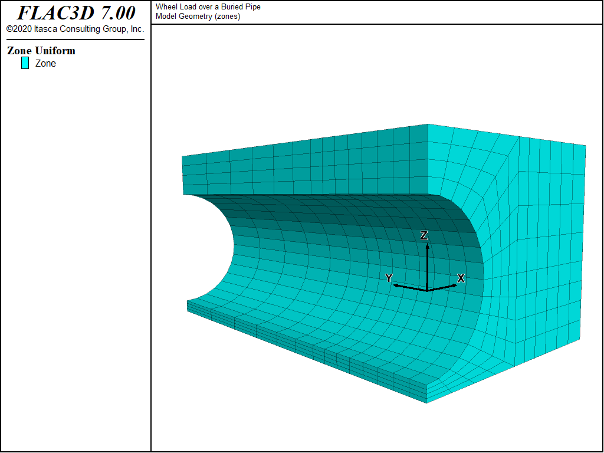
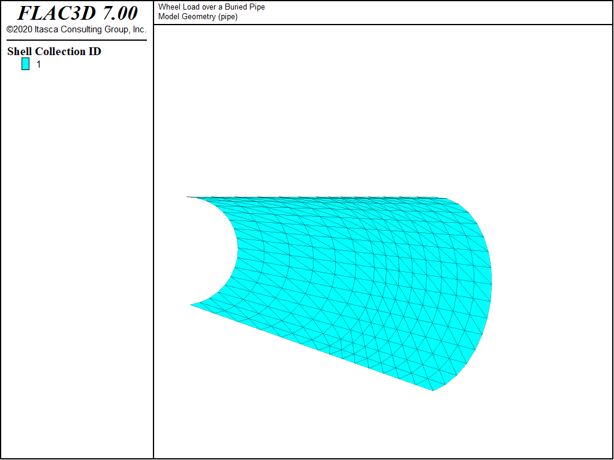
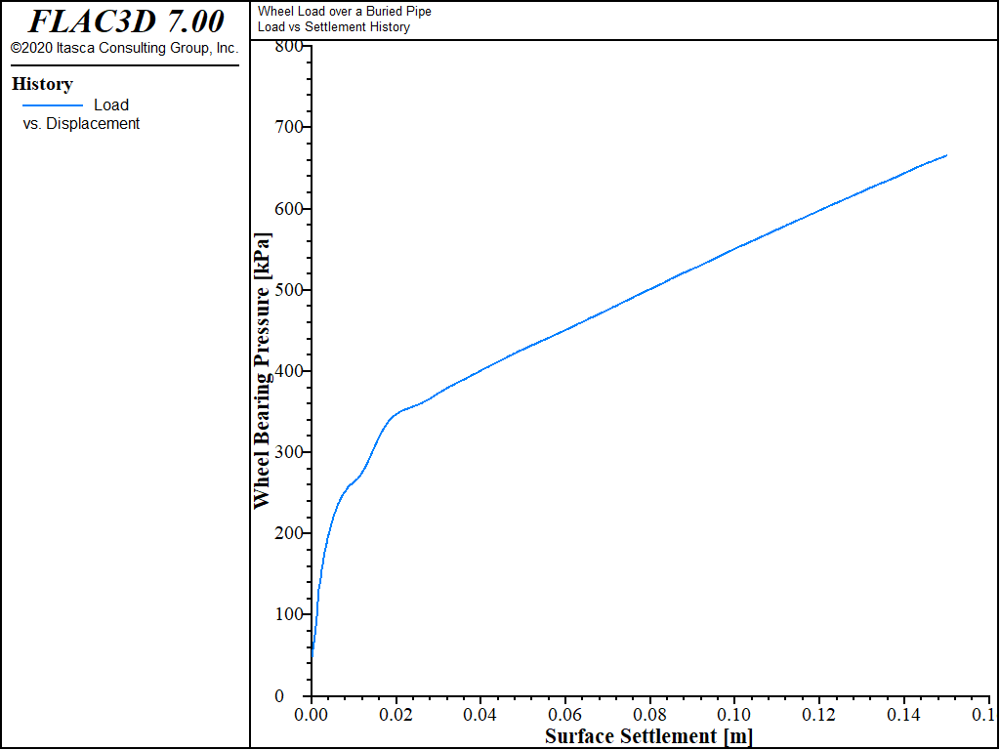
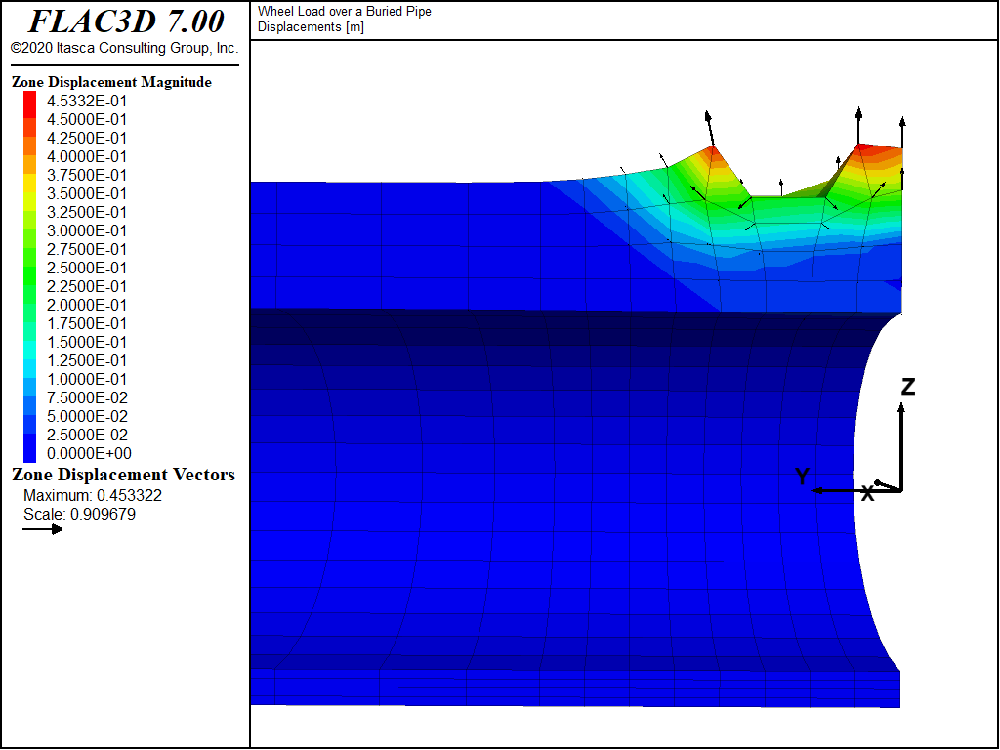
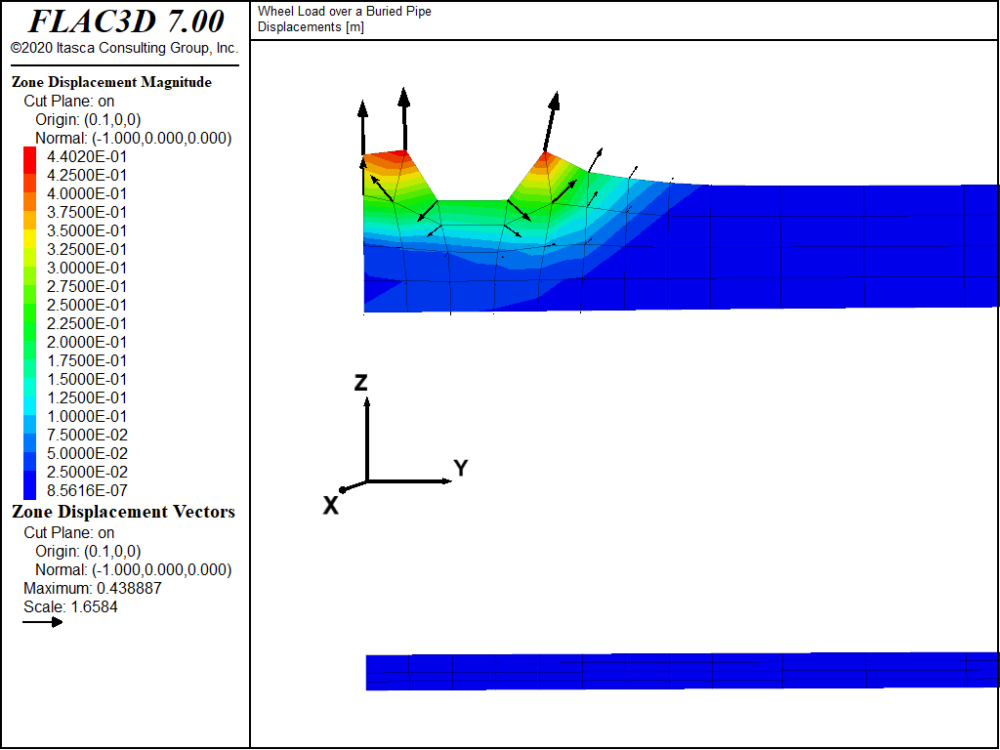
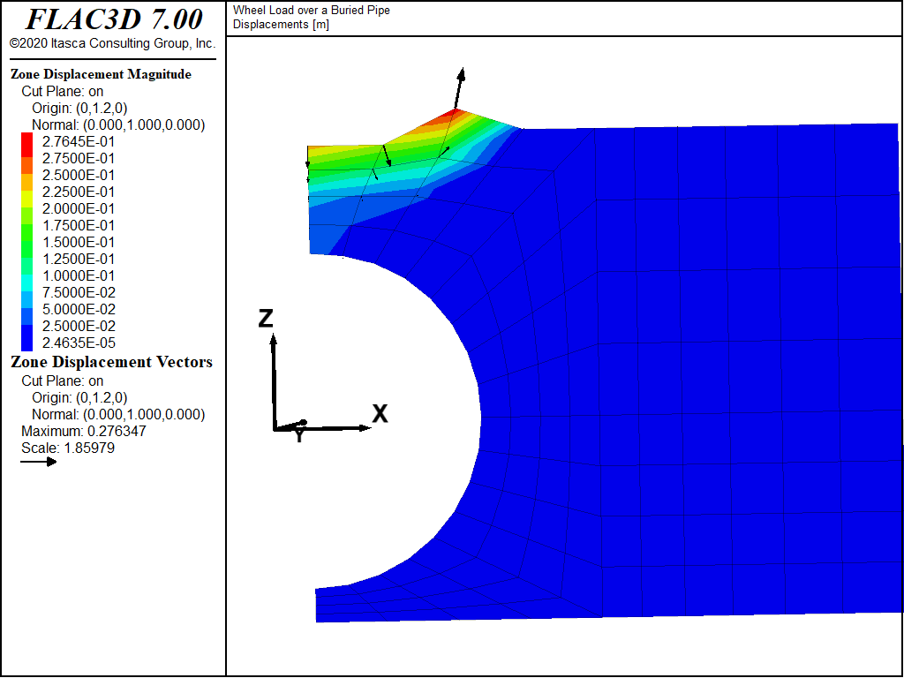
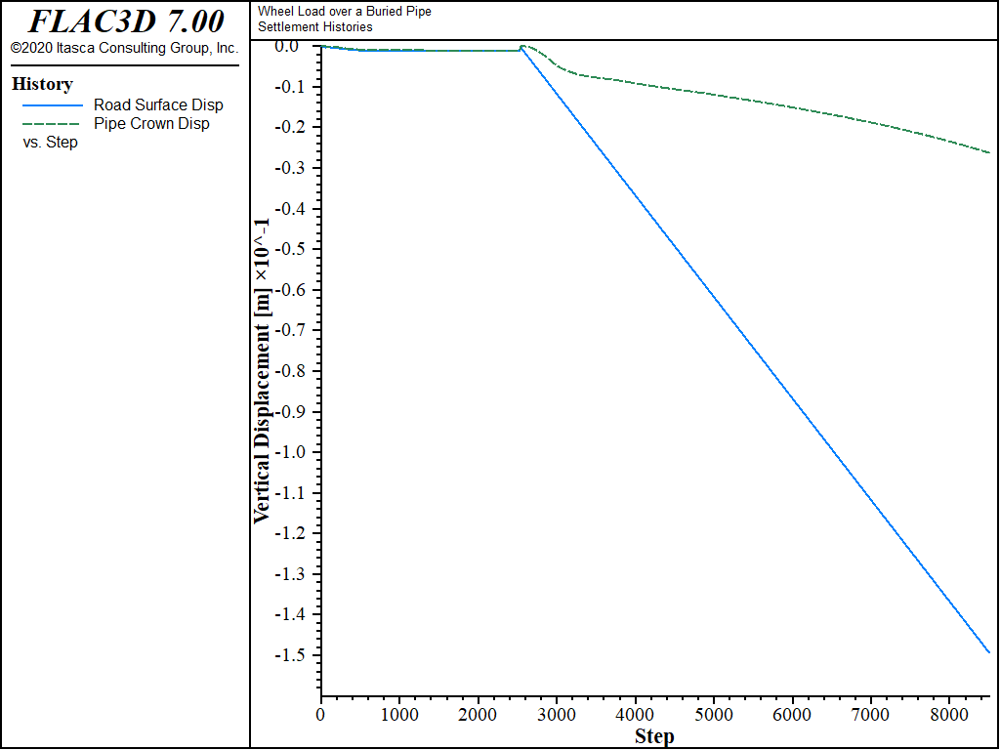
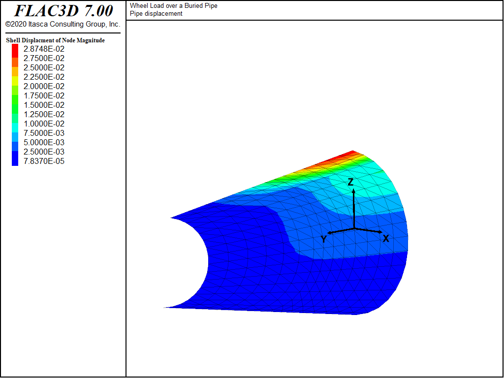
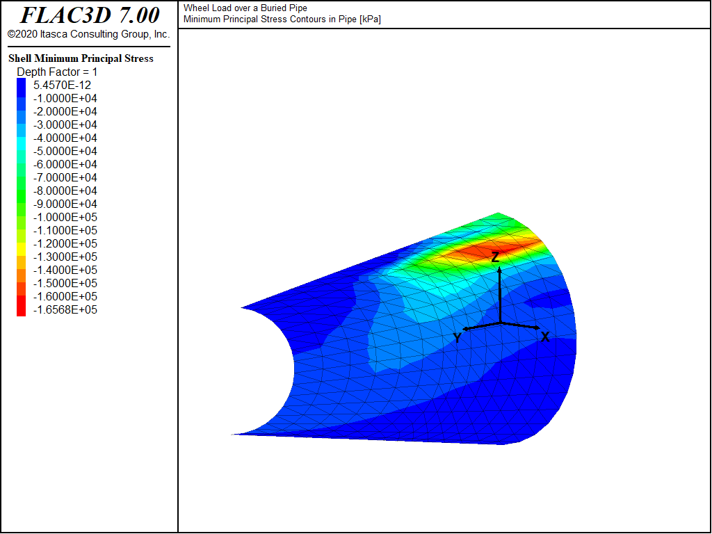

埋地管道上的车轮荷载
问题描述
注意
要在 FLAC3D 中查看此项目，请使用菜单命令 。选择“ExampleApplications/WheelLoadOverBuriedPipe”，然后选择“WheelLoadOverBuriedPipe.f3dprj”进行加载。该项目的主数据文件（main data file）显示在本示例末尾。
一根钢管浅埋于道路下方。需要进行分析，以评价车轮荷载对路面变形、管道挠度以及管内应力的影响。
管道顶部位于路面以下 1.4 m。管道外径为 4 m，壁厚 0.12 m。管道开挖宽度为 14 m，深度为 5.8 m。管道放置在 0.4 m 厚的土回填层上，然后在管道周围压实土体。
在管道上方距 \(y\) = 0 平面 1.25 m 处施加车轮荷载。车轮荷载施加在地表的四个网格点上。如果假定荷载由与这些网格点相连的各网格单元的一半承担，则车轮面积可假定为 1.275 m2。车轮荷载逐渐增大，直至土体发生破坏。分析确定破坏荷载以及由此产生的土体沉降、管道位移和应力。
建模步骤
FLAC3D 模型假定关于通过管道中心的竖直平面和两车轮荷载之间的竖直平面均对称。模型网格如图 1（Figure 1） 所示。\(x\) = 0 平面对应于通过管道中心的竖直平面，\(y\) = 0 平面对应于两车轮荷载之间的平面。模型包含 1344 个网格单元，在所施加车轮荷载附近网格较细。
对于这些模型条件，假定若管道发生屈曲，则屈曲发生在管道的圆平面内。沿管道方向的屈曲被认为不太可能，因此在分析中不予考虑。如果预计会沿管道方向发生屈曲，则需要建立管道的完整模型。
土体回填采用 Mohr-Coulomb 材料表示，其若干性质列于 表 1（Table 1）：
| density | 2000 kg/m3 |
| 剪切模量 | 0.30 × 108 Pa |
| 体积模量 | 0.65 × 108 Pa |
| 摩擦角 | 34° |
| 剪胀角 | 20° |
| 黏聚力 | 5.0 × 103 Pa |
| 抗拉强度 | 103 Pa |
车轮荷载通过对车轮荷载区域内的网格点施加恒定速度来模拟。在 6000 个计算步中施加 -2.5 × 10-5 m/step 的 \(z\) 方向速度。加载过程中使用 FISH 函数 水荷载（wload） 监测车轮承载压力。


图 1：浅埋管道模型。
钢管采用结构（壳）单元表示。图 2（Figure 2） 显示了壳单元的几何。管道由 448 个结构单元和 255 个结构节点组成。钢材的杨氏模量为 227 GPa，泊松比为 0.25。
本分析在大应变模式下进行，以更清晰地表示土体的沉降剖面。模型首先在重力荷载下运行至平衡状态；初始最大位移为路面处 1.11 mm、管道顶部 0.92 mm。随后将位移清零，再施加 \(z\) 方向速度以模拟车轮荷载。


图 2：代表管道的结构壳（SEL）单元。
结果与讨论
在 6000 个计算步后，车轮荷载引起的路面位移为 15 cm。图 3（Figure 3） 绘制了车轮承载压力与地表沉降的关系。该图表明土体发生破坏时的车轮承载压力约为 400 kPa。由于管道提供的支护作用，压力继续增大：在 6000 个计算步后达到 750 kPa。
地表沉降如图 4（Figure 4） 中的位移云图和矢量图所示。该图显示了车轮荷载正下方最大挠度的区域。沿管道轴线的网格位移剖面如图 5（Figure 5） 所示，垂直于管道轴线的剖面如图 6（Figure 6） 所示。
车轮荷载下方路面处以及管道顶部的竖向位移时程绘制于图 7（Figure 7） 中。当路面位移为 15 cm 时，管道顶部已挠曲 2.6 cm。图 8（Figure 8） 绘制了壳单元内的位移云图。请注意，这些是总位移（包括重力引起的位移）。
管道内表面的应力分布如图 9（Figure 9） 中最小（即最大）主应力的云图所示。FISH 函数 米塞斯（mises） 计算管道中的最大 von Mises 应力不变量。最大 von Mises 应力位于管道内表面，计算值约为 200,000 kPa。


图 3：车轮承载压力（kPa）与地表沉降（m）的关系。


图 4：车轮荷载引起的位移（m）。


图 5：沿管道轴线的竖直平面上的位移（m）。


图 6：垂直于管道轴线的竖直平面上的位移（m）。


图 7：车轮荷载下方路面（实线）和管顶（虚线）竖向位移（m）的历史。


图 8：重力荷载和车轮荷载引起的管道挠度（m）云图。


图 9：重力荷载和车轮荷载引起的管道最小主应力（kPa）云图。
数据文件
WheelLoadOverBuriedPipe.dat
; ==================================================================
; 埋地管道上轮载的 FLAC3D 分析
; ==================================================================
model new
fish automatic-create off
model title 'Wheel Load over a Buried Pipe'
; 使用 Extruder 工具生成几何体，由状态记录保存
program call 'geometry' suppress
zone generate from-extruder
zone face skin ; 标记模型边界
; 标记待施加载荷的面
zone face group 'loadedFace' range position-x -0.1 0.9 ...
position-y 0.9 1.6 position-z 3.3 3.6
; 为土体指定摩尔-库仑模型（应力单位：kPa）
zone cmodel assign mohr-coulomb
model gravity 10
zone property bulk 65000 shear 30000 density 2.0
zone property cohesion 5.0 friction 34 tension 1.0 dilation 20
;
model large-strain on
; 施加滚轴边界
zone face apply velocity-normal 0 range group 'Bottom1'
zone face apply velocity-normal 0 range group 'East' or 'West2' or 'West1'
zone face apply velocity-normal 0 range group 'North' or 'South'
;
zone history name 'zwheel' displacement-z position (0,1,3.4)
zone history name 'zpipe' displacement-z position (0,1,2)
model save 'geometry'
; 添加管道
struct shell create by-zone-face range group 'pipeFace' ; 已指定组
; 在 Extruder 中。
struct shell property isotropic 227e6 0.25 thickness 0.012
; 壳单元边界条件
struct node fix velocity-y rotation-x rotation-z range position-y 0
struct node fix velocity-y rotation-x rotation-z range position-y 12
struct node fix velocity-x rotation-y rotation-z range position-x 0
; 求解初始重力荷载。
model solve ratio-local 1e-4
model save 'initial'
; 重置位移
zone gridpoint initialize displacement (0,0,0)
; 在表面施加轮载
zone face apply velocity-z -2.5e-5 range group 'loadedFace'
; 计算施加的荷载
[global gplist = gp.list(gp.isgroup(::gp.list, 'loadedFace'))]
fish define load
return list.sum(gp.force.unbal.z(::gplist)) / 1.275
end
fish history name 'load' load
model step 6000 ; 车轮总位移 0.15
; 应力恢复 ...
struct shell recover surface (1,2,3)
struct shell recover stress depth-factor 1.0
program call 'mises' suppress ; 用于查找最大 von-mises 应力的 FISH 函数
fish list [mises]
; 保存最终状态
model save 'load'
⇐ Simulation of Pull-Tests for Fully Bonded Rock Reinforcement | Embankment Loading on a Cam-Clay Foundation ⇒
| 这些内容对您有帮助吗？… | FLAC3D © 2019, Itasca | 原文更新于 2020 年 10 月 8 日 |
| 版权与免责声明 | ||